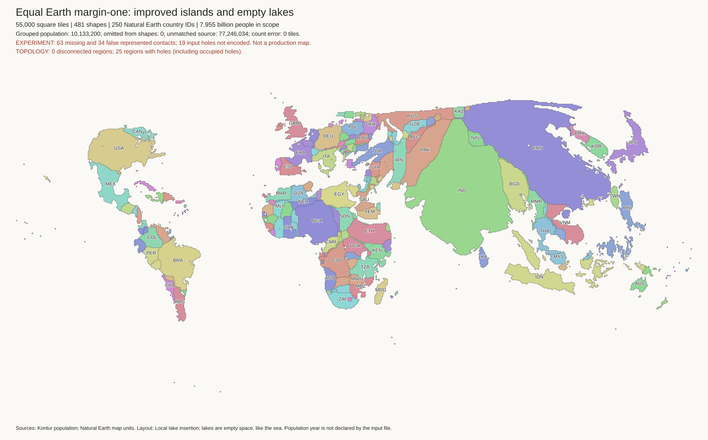
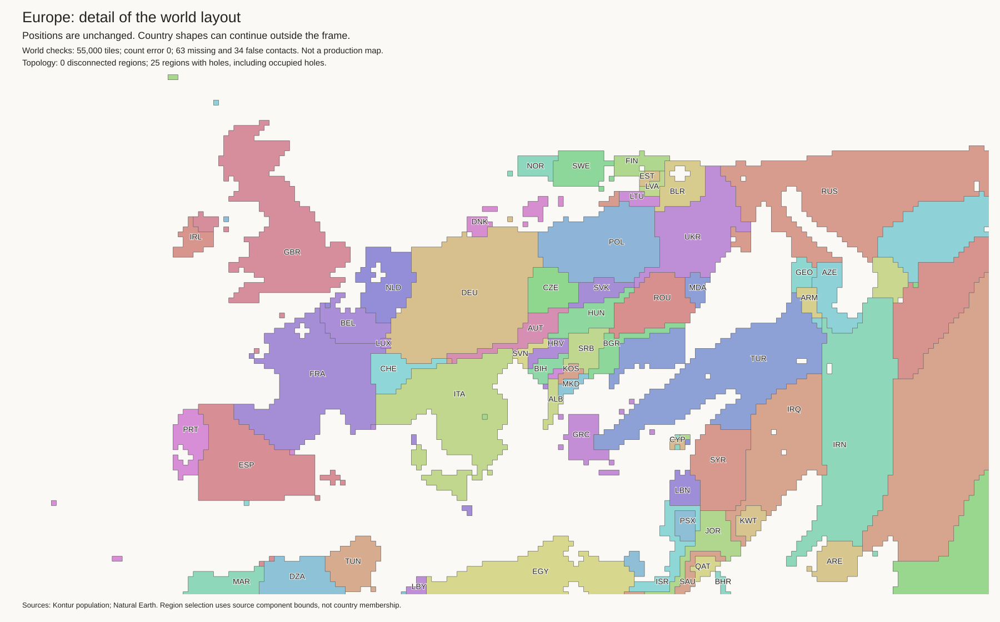
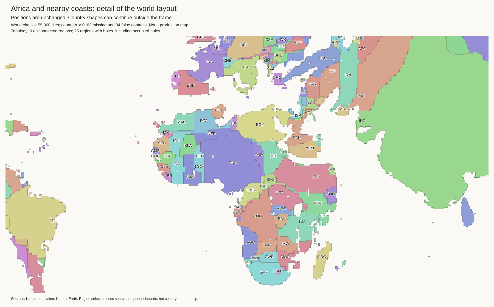
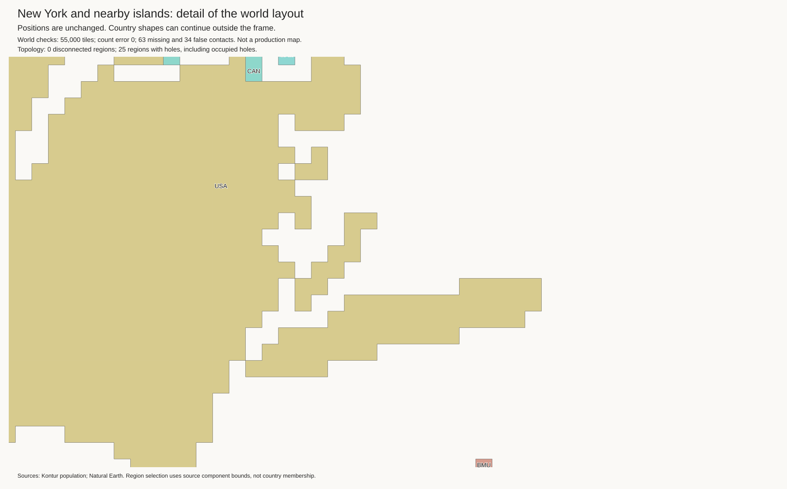
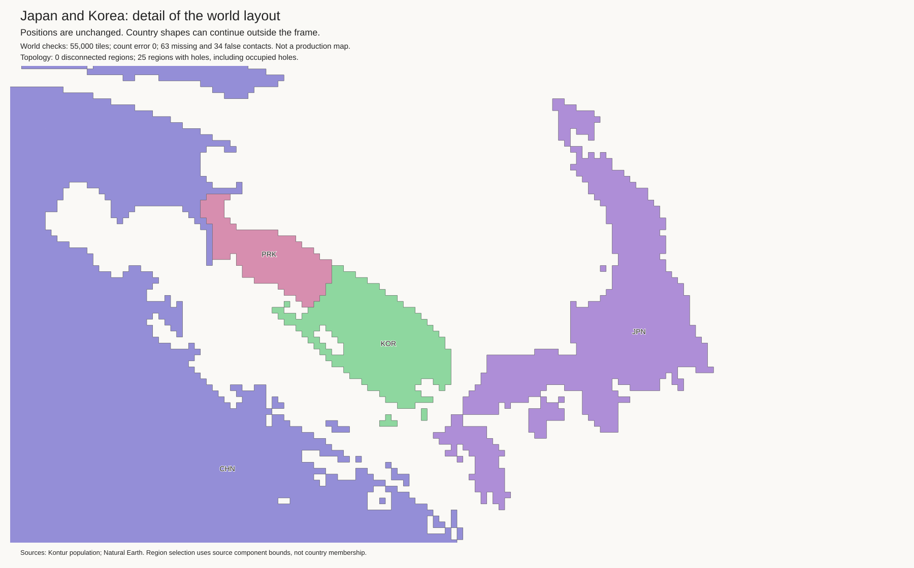
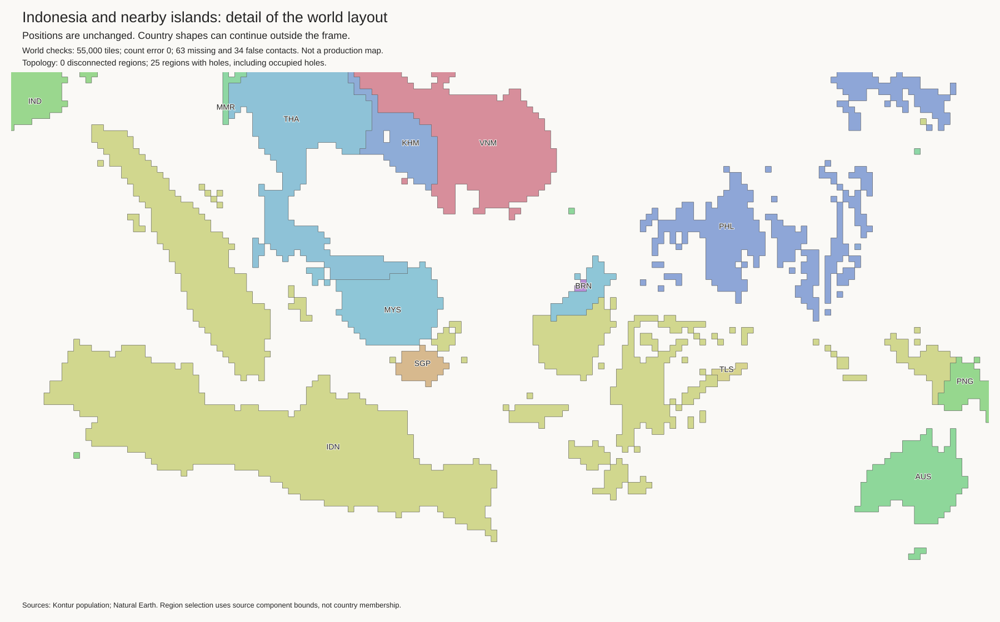

This combines the saved island-placement candidate with the existing local lake-insertion stage. It does not rerun the mainland fit or change the projection. Equal Earth remains the basis. No sparse-border cuts are included in this saved layout.
All 208 moved components retain their exact island-candidate positions. The same 45 named lakes retain their water budgets: 220 empty cells, separate from 55,000 land tiles. Lake positions and nearby mainland cells can change during insertion. The contact graph is exactly the same as in the island candidate: 63 missing and 34 false administrative contacts.
All 481 component budgets are exact. Every component is connected. No source landmass is split. This is the combined development baseline; no new H3-MON population mapping has been published.
World · Europe · New York · Africa and lakes · Japan and Korea · Indonesia · Eurasia


Previous lakes-only view · Saved islands-only view




Exact island and lake checks · Landmass audit · Layout metrics · Lake insertion report · Tiles · Empty lake cells · Checksums
PY=output/auto-cartogram/geometry-env/bin/python $PY examples/auto-cartogram/place_lake_regions.py \ output/auto-cartogram/world-55000-dissolved-input \ output/auto-cartogram/geography-margin1-cohesion \ output/auto-cartogram/world-dissolved/polygons.geojson \ output/auto-cartogram/geography-lake-guides-final \ output/auto-cartogram/geography-source-coasts-55000/source-coasts.csv \ output/auto-cartogram/islands-lakes-new \ --placement-attempts 128 --path-attempts 256
Use a new output directory. check_island_lake_integration.py checks the result against
the original mainland, saved island candidate, and reference lake budgets.
The input island cells match the published island archive byte for byte.
Use this combined layout, not a new separate-country fit. Test sparse-border releases against a contact-preserving control. Judge shape recovery as well as gaps. Use the archived OWID layout as the visual gap reference. Do not overwrite this baseline with an experiment.